This guide has been marked for review. If you are just getting started with Orchard module development you should read the Getting Started with Modules course first. It will introduce you to building modules with Orchard using Visual Studio Community, a free edition of Visual Studio.
本指南已标记为可供审阅。如果您刚开始使用Orchard模块开发，则应首先阅读[模块入门课程]（模块入门）。它将向您介绍使用Visual Studio社区构建模块，Visual Studio社区是Visual Studio的免费版本。
This tutorial walks through the process of creating a new content part from scratch, using the scaffolding feature in Orchard as a productivity tool. Although this tutorial assumes development in Visual Studio, it is not strictly necessary to have Visual Studio to develop a content part -- feel free to use your editor of choice.
本教程将介绍从头开始创建新内容部分的过程，使用Orchard中的脚手架功能作为生产力工具。虽然本教程假定在Visual Studio中进行开发，但并不一定要让Visual Studio开发内容部分 - 随意使用您选择的编辑器。
In this tutorial, we are going to build a custom Map part that can be configured with latitude and longitude values in order to display a map image for a content item.
在本教程中，我们将构建一个自定义的“Map”部分，可以使用纬度和经度值进行配置，以显示内容项的地图图像。
Important: Before you can generate the file structure for your module, you need to download, install, and enable the Code Generation feature for Orchard. For more information, see Command-line Code Generation.
重要事项：在为模块生成文件结构之前，您需要下载，安装并启用Orchard的代码生成功能。有关更多信息，请参阅[命令行代码生成]（命令行脚手架）。
We are going to add a new Maps module to contain our Map part implementation, as a new project in the Orchard solution. Assuming you have enlisted in the Orchard source tree, launch Visual Studio 2010 and open the Orchard.sln file under the src folder of your enlistment.
我们将添加一个新的Maps模块来包含我们的Map部分实现，作为Orchard解决方案中的一个新项目。假设您已加入Orchard源代码树，请启动Visual Studio 2010并在您的登记的src文件夹下打开Orchard.sln文件。
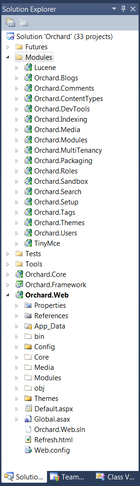
Type codegen module Maps /IncludeInSolution:true at the Orchard command-prompt. The IncludeInSolution switch tells Orchard to wire up a new Maps module project to the Orchard.sln file.
在Orchard命令提示符下键入codegen module Maps / IncludeInSolution：true。 IncludeInSolution开关告诉Orchard将一个新的Maps模块项目连接到Orchard.sln文件。
orchard> codegen module Maps /IncludeInSolution:true
Creating module Maps
Module Maps created successfully
After running this command, Visual Studio prompts to re-load the solution file. Accept this prompt.
运行此命令后，Visual Studio会提示重新加载解决方案文件。接受此提示。
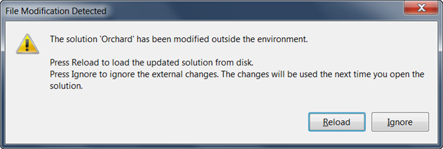
The Maps module project appears added to the solution, along with some default files and folder to get you started.
“Maps”模块项目会添加到解决方案中，还会显示一些默认文件和文件夹以帮助您入门。
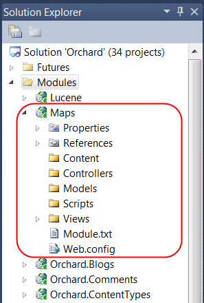
Open the Module.txt file at the root of the Maps module project. This file defines the information about your module, such as a name, description, version, author, and a categorized of features exposed by the module. The Module.txt file can also contain additional information such as dependencies, which we will not cover here. Our module is pretty simple, and only contains a single Maps feature with no additional dependencies. Edit the Module.txt file as indicated below.
在Maps模块项目的根目录下打开Module.txt文件。此文件定义有关模块的信息，例如名称，描述，版本，作者以及模块公开的功能分类。 Module.txt文件还可以包含其他信息，例如依赖项，我们在此不会介绍。我们的模块非常简单，只包含一个“地图”功能，没有其他依赖项。编辑Module.txt文件，如下所示。
Name: Maps
AntiForgery: enabled
Author: The Orchard Team
Website: http://orchardproject.net
Version: 1.0.0
OrchardVersion: 1.0.0
Description: Adds a map image to content items, based on longitude and latitude.
Features:
Maps:
Description: Adds a map image to content items, based on longitude and latitude.
Category: Geolocation
Now let's begin to write the Map part. To begin with, we need a class to contain the data for the part. Data classes are conventionally added to the Models folder of the project. Right-click the Models folder in Visual Studio and choose Add > Class from the context menu and name the new file Map.cs:
现在让我们开始编写Map部分。首先，我们需要一个类来包含该部件的数据。数据类通常被添加到项目的“Models”文件夹中。右键单击Visual Studio中的Models文件夹，从上下文菜单中选择 Add> Class ，并将新文件命名为Map.cs：
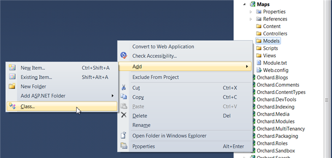
In Orchard, content part data is represented by a Record class, which represents the fields that are stored to a database table, and a ContentPart class that uses the Record for storage. Add the MapRecord (ContentPartRecord) and MapPart (ContentPart) classes as follows:
在Orchard中，内容部分数据由Record类表示，它表示存储到数据库表的字段，以及ContentPart类，它使用Record进行存储。添加MapRecord（ContentPartRecord）和MapPart（ContentPart）类如下：
using System.ComponentModel.DataAnnotations;
using Orchard.ContentManagement;
using Orchard.ContentManagement.Records;
namespace Maps.Models
{
public class MapRecord : ContentPartRecord
{
public virtual double Latitude { get; set; }
public virtual double Longitude { get; set; }
}
public class MapPart : ContentPart<MapRecord>
{
[Required]
public double Latitude
{
get { return Retrieve(r => r.Latitude); }
set { Store(r => r.Latitude, value); }
}
[Required]
public double Longitude
{
get { return Retrieve(r => r.Longitude); }
set { Store(r => r.Longitude, value); }
}
}
}
Now build the Maps project to ensure your Record class compiles successfully.
现在构建Maps项目以确保您的Record类成功编译。
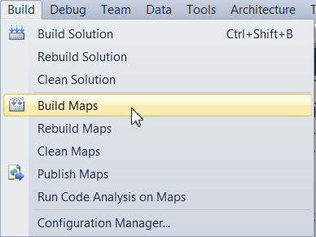
Next, we are going to create a data migration for our Maps module. Why do we need a migration class? The reason is that defining a Record and Part class to store the data doesn't actually impact the database in any way. A data migration is what tells Orchard how to update the database schema when the Maps feature is enabled (the migration runs when the feature is activated). A migration can also upgrade the database schema from prior versions of a module to the schema required by a newer version of a module - this is an advanced topic that won't be covered in this tutorial.
接下来，我们将为我们的Maps模块创建数据迁移。为什么我们需要迁移类？原因是定义一个Record和Part类来存储数据实际上并没有以任何方式影响数据库。数据迁移是告诉Orchard如何在启用“Maps”功能时更新数据库模式（迁移在激活功能时运行）。迁移还可以将数据库模式从模块的先前版本升级到模块的较新版本所需的模式 - 这是本教程不会涉及的高级主题。
To create a new data migration class, you can use the Code Generation feature of Orchard. Run codegen datamigration Maps from the Orchard command-line.
要创建新的数据迁移类，可以使用Orchard的代码生成功能。从Orchard命令行运行codegen datamigration Maps。
orchard> codegen datamigration Maps
Creating Data Migration for Maps
Data migration created successfully in Module Maps
Visual Studio prompts to re-load the solution again. After accepting this prompt, the new data migration classes appears in the project.
Visual Studio会再次提示重新加载解决方案。接受此提示后，新数据迁移类将显示在项目中。
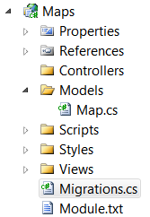
The migration class added by the codegen command contains a single Create() method that defines a database table structure based on the Record classes in the project. Because we only have a single MapRecord class with latitude and longitude properties, the migration class is fairly simple. Note that the Create method is called at the time the feature is activated, and the database will be updated accordingly.
codegen命令添加的迁移类包含一个Create（）方法，该方法根据项目中的Record类定义数据库表结构。因为我们只有一个带有纬度和经度属性的MapRecord类，所以迁移类非常简单。请注意，在激活功能时调用Create方法，数据库将相应更新。
using System;
using System.Collections.Generic;
using System.Data;
using Maps.Models;
using Orchard.ContentManagement.Drivers;
using Orchard.ContentManagement.MetaData;
using Orchard.ContentManagement.MetaData.Builders;
using Orchard.Core.Contents.Extensions;
using Orchard.Data.Migration;
namespace Maps.DataMigrations {
public class Migrations : DataMigrationImpl {
public int Create() {
// Creating table MapRecord
SchemaBuilder.CreateTable("MapRecord", table => table
.ContentPartRecord()
.Column("Latitude", DbType.Double)
.Column("Longitude", DbType.Double)
);
ContentDefinitionManager.AlterPartDefinition(
typeof(MapPart).Name, cfg => cfg.Attachable());
return 1;
}
}
}
Add the AlterPartDefinition lines to the migration in order to make the part attachable to any content type. Also add using Maps.Models; to the top of the file.
将“AlterPartDefinition”行添加到迁移中，以使该部件可附加到任何内容类型。还要将使用Maps.Models;添加到文件的顶部。
Now let's add the handler for the Map part. A handler in Orchard is a class that defines the behavior of the part, handling events or manipulating data model prior to rendering the part. The Map part is very simple, and in this case, our handler class will only specify that an IRepository of MapRecord should be used as the storage for this part. Add the following Handlers\MapHandler.cs file:
现在让我们为Map部分添加处理程序。 Orchard中的处理程序是一个类，它定义部件的行为，在呈现零件之前处理事件或操纵数据模型。 Map部分非常简单，在这种情况下，我们的处理程序类只会指定Mapecord的IRepository应该用作这部分的存储。添加以下Handlers \\ MapHandler.cs文件：
using Maps.Models;
using Orchard.ContentManagement.Handlers;
using Orchard.Data;
namespace Maps.Handlers {
public class MapHandler : ContentHandler {
public MapHandler(IRepository<MapRecord> repository) {
Filters.Add(StorageFilter.For(repository));
}
}
}
We will also add a driver for our Map part. A driver in Orchard is a class that can define associations of shapes to display for each context in which the Map part can render. For example, when displaying a Map on the front-end, a Display method defines the name of the template to use for different displayTypes (for example, "details" or "summary"). Similarly, an Editor method of the driver defines the template to use for displaying the editor of the Map part (for entering values of the latitude and longitude fields). We are going to keep this part simple and just use Map as the name of the shape to use for both Display and Editor contexts (and all displayTypes). Add the Drivers\MapDriver class as follows.
我们还将为我们的Map部分添加一个驱动程序。 Orchard中的驱动程序是一个类，它可以定义要为Map部分可以呈现的每个上下文显示的形状关联。例如，当在前端显示“Map”时，“Display”方法定义用于不同displayTypes的模板名称（例如，“details”或“summary”）。类似地，驱动程序的Editor方法定义用于显示Map部分的编辑器的模板（用于输入纬度和经度字段的值）。我们将保持这部分简单，只需使用Map作为形状的名称，用于Display和Editor上下文（以及所有displayTypes）。添加Drivers \\ MapDriver类如下。
using Maps.Models;
using Orchard.ContentManagement;
using Orchard.ContentManagement.Drivers;
namespace Maps.Drivers {
public class MapDriver : ContentPartDriver<MapPart> {
protected override DriverResult Display(
MapPart part, string displayType, dynamic shapeHelper) {
return ContentShape("Parts_Map", () => shapeHelper.Parts_Map(
Longitude: part.Longitude,
Latitude: part.Latitude));
}
//GET
protected override DriverResult Editor(
MapPart part, dynamic shapeHelper) {
return ContentShape("Parts_Map_Edit",
() => shapeHelper.EditorTemplate(
TemplateName: "Parts/Map",
Model: part,
Prefix: Prefix));
}
//POST
protected override DriverResult Editor(
MapPart part, IUpdateModel updater, dynamic shapeHelper) {
updater.TryUpdateModel(part, Prefix, null, null);
return Editor(part, shapeHelper);
}
}
}
We can now add the display and editor views in Visual Studio. First add Parts and EditorTemplates/Parts folders to the Views folder in the Maps project, and then add Map.cshtml files into the Views/EditorTemplates/Parts and the Views/Parts folders as follows.
我们现在可以在Visual Studio中添加显示和编辑器视图。首先将Parts和EditorTemplates / Parts文件夹添加到Maps项目的Views文件夹中，然后将Map.cshtml文件添加到Views / EditorTemplates / Parts和Views / Parts中文件夹如下。
Views/EditorTemplates/Parts/Map.cshtml:
@model Maps.Models.MapPart
<fieldset>
<legend>Map Fields</legend>
<div class="editor-label">
@Html.LabelFor(model => model.Latitude)
</div>
<div class="editor-field">
@Html.TextBoxFor(model => model.Latitude)
@Html.ValidationMessageFor(model => model.Latitude)
</div>
<div class="editor-label">
@Html.LabelFor(model => model.Longitude)
</div>
<div class="editor-field">
@Html.TextBoxFor(model => model.Longitude)
@Html.ValidationMessageFor(model => model.Longitude)
</div>
</fieldset>
Views/Parts/Map.cshtml:
<img alt="Location" border="1" src="http://maps.google.com/maps/api/staticmap?
&zoom=14
&size=256x256
&maptype=roadmap
&markers=color:blue|@Model.Latitude,@Model.Longitude
&sensor=false" />
Both of these templates will be rendered as parts of a larger, composite page. Because the system needs to know the order and location where they will render within the composed page, we need to add a Placement.info file into the root of the module's directory:
这两个模板都将呈现为较大的复合页面的一部分。因为系统需要知道它们将在组合页面中呈现的顺序和位置，我们需要将“Placement.info”文件添加到模块目录的根目录中：
<Placement>
<Place Parts_Map="Content:10"/>
<Place Parts_Map_Edit="Content:7.5"/>
</Placement>
This is saying that the Parts_Map shape (which is rendered by Views/Parts/Map.cshtml unless overridden in the current theme) should render in the "Content" zone if available, in tenth position. It also positions the editor shape/template in the "Primary" zone in second position.
这就是说Parts_Map形状（由Views / Parts / Map.cshtml呈现，除非在当前主题中被覆盖）应在“内容”区域中呈现（如果可用），位于第十位。它还将编辑器形状/模板定位在“主要”区域中的第二个位置。
To activate the Map part, go to the Features section of the Orchard admin panel and enable it.
要激活Map部件，请转到Orchard管理面板的 Features 部分并启用它。
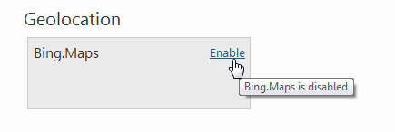
You can try out the Map part by attaching it to any content type in the system, using the Content Types section of the Orchard admin panel. Let's add it to an existing content type, namely, the custom Event content type that we built in the Creating custom content types topic. If you haven't read that topic yet or don't have the Event type, go ahead and add the Map to the Page content type instead (following the same steps below).
您可以使用Orchard管理面板的内容类型部分，通过将它附加到系统中的任何内容类型来试用Map部分。让我们将它添加到现有的内容类型，即我们在[创建自定义内容类型]（Creating-custom-content-types）主题中构建的自定义Event内容类型。如果您尚未阅读该主题或没有“事件”类型，请继续将“Map”添加到“Page”内容类型（按照以下相同步骤）。
On the Manage Content Types admin screen, click on Edit to edit the definition of this type (you may need to enable the Orchard.ContentTypes feature first).
在管理内容类型管理屏幕上，单击编辑以编辑此类型的定义（您可能需要首先启用Orchard.ContentTypes功能）。
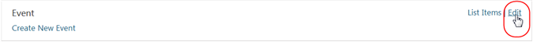
In the list of parts for the Event type, click on Add to add a part.
在“事件”类型的部件列表中，单击添加以添加部件。
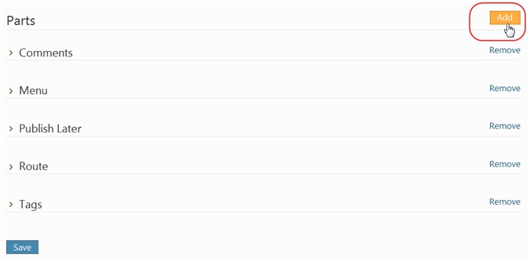
The Map part displays in the list of available parts to add. Select it, and click Save.
Map部分显示在要添加的可用部件列表中。选择它，然后单击保存。
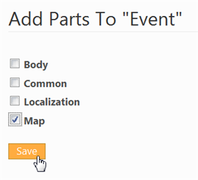
Now go the Manage Content and edit an event content item. Notice that the Map part adds Latitude and Longitude fields to this item. Type some valid coordinates and re-publish the content item.
现在转到管理内容并编辑活动内容项。请注意，Map部分将“Latitude”和“Longitude”字段添加到此项目中。键入一些有效坐标并重新发布内容项。

On the front-end of your site, you can see the effect of the Map part rendering on the event content item.
在站点的前端，您可以看到“Map”部分渲染对事件内容项的影响。
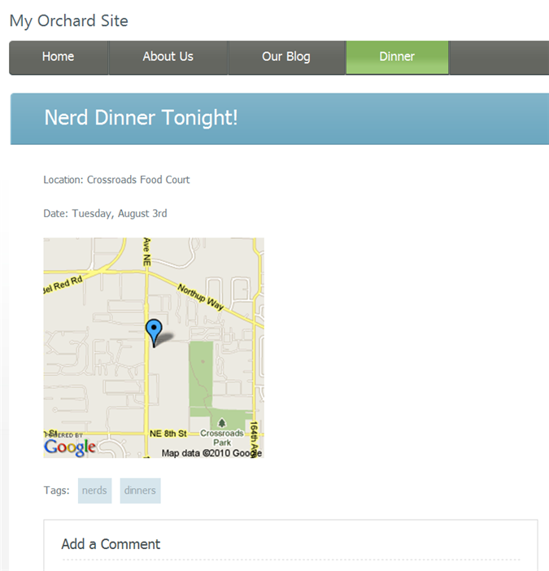
Getting the Code
获取代码
The Map part described in this topic is available from here: Orchard.Module.Maps.1.0.0.zip, ready to install and use, with full source code.
本主题中描述的“Map”部分可从此处获得：[Orchard.Module.Maps.1.0.0.zip]（../ Attachments / Writing-a-content-part / Orchard.Module.Maps.1.0.0 .zip），准备安装和使用，完整的源代码。